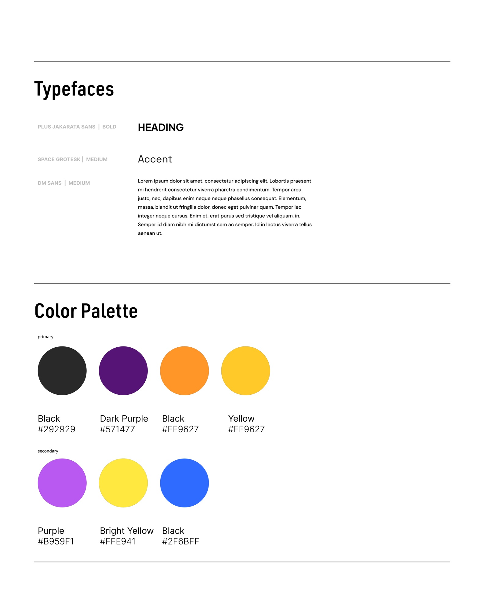
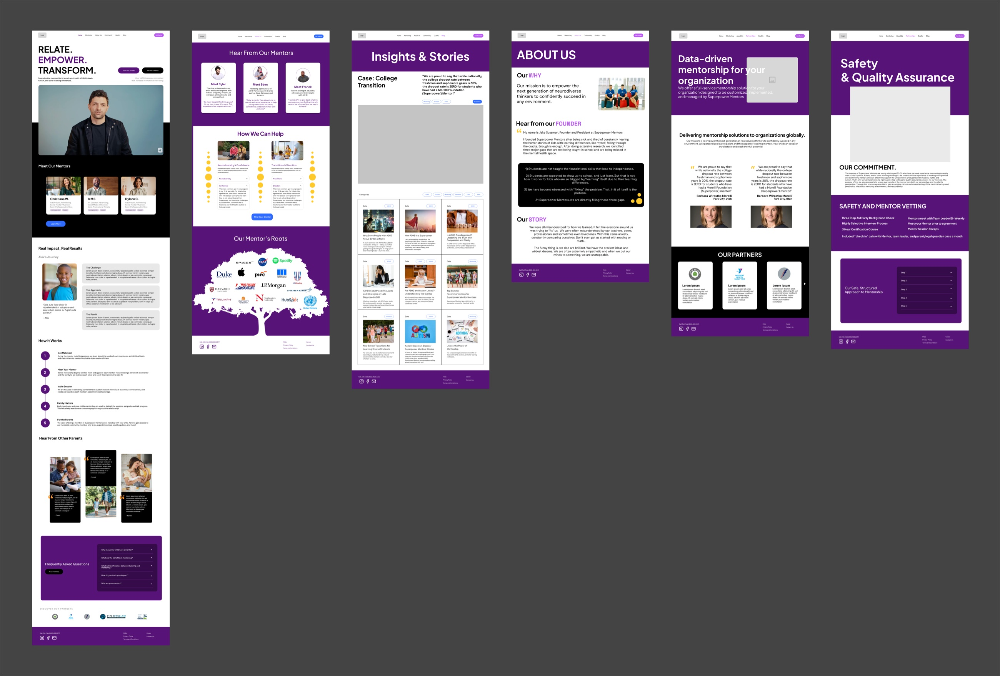

05
Iteration
The brand direction took three rounds. We started wide with mood boards, narrowed to a palette built on deep purple, vibrant orange, and warm yellow, then pushed the wireframes to mid fidelity to see the identity in context.

Round 1Mood boards

Round 2Branding guide

Round 3Mid-fidelity